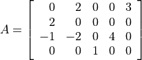
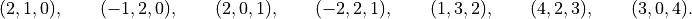

Dense and Sparse Matrices
This chapter describes the two CVXOPT matrix types:
matrix objects, used for dense matrix
computations, and spmatrix objects, used for
sparse matrix computations.
Dense Matrices
A dense matrix is created by calling the function matrix. The
arguments specify the values of the coefficients, the dimensions, and the
type (integer, double, or complex) of the matrix.
- cvxopt.matrix(x[, size[, tc]])
sizeis a tuple of length two with the matrix dimensions. The number of rows and/or the number of columns can be zero.tcstands for type code. The possible values are'i','d', and'z', for integer, real (double), and complex matrices, respectively.xcan be a number, a sequence of numbers, a dense or sparse matrix, a one- or two-dimensional NumPy array, or a list of lists of matrices and numbers.If
xis a number (Python integer, float, or complex number), a matrix is created with the dimensions specified bysizeand with all the coefficients equal tox. The default value ofsizeis(1,1), and the default value oftcis the type ofx. If necessary, the type ofxis converted (from integer to double when used to create a matrix of type'd', and from integer or double to complex when used to create a matrix of type'z').>>> from cvxopt import matrix >>> A = matrix(1, (1,4)) >>> print(A) [ 1 1 1 1] >>> A = matrix(1.0, (1,4)) >>> print(A) [ 1.00e+00 1.00e+00 1.00e+00 1.00e+00] >>> A = matrix(1+1j) >>> print(A) [ 1.00e+00+j1.00e+00]
If
xis a sequence of numbers (list, tuple, array,arrayarray, …), then the numbers are interpreted as the coefficients of a matrix in column-major order. The length ofxmust be equal to the product ofsize[0]andsize[1]. Ifsizeis not specified, a matrix with one column is created. Iftcis not specified, it is determined from the elements ofx(and if that is impossible, for example becausexis an empty list, a value'i'is used). Type conversion takes place as for scalarx.The following example shows several ways to define the same integer matrix.
>>> A = matrix([0, 1, 2, 3], (2,2)) >>> A = matrix((0, 1, 2, 3), (2,2)) >>> A = matrix(range(4), (2,2)) >>> from array import array >>> A = matrix(array('i', [0,1,2,3]), (2,2)) >>> print(A) [ 0 2] [ 1 3]
In Python 2.7 the following also works.
>>> A = matrix(xrange(4), (2,2))
If
xis a dense or sparse matrix, then the coefficients ofxare copied, in column-major order, to a new matrix of the given size. The total number of elements in the new matrix (the product ofsize[0]andsize[1]) must be the same as the product of the dimensions ofx. Ifsizeis not specified, the dimensions ofxare used. The default value oftcis the type ofx. Type conversion takes place when the type ofxdiffers fromtc, in a similar way as for scalarx.>>> A = matrix([1., 2., 3., 4., 5., 6.], (2,3)) >>> print(A) [ 1.00e+00 3.00e+00 5.00e+00] [ 2.00e+00 4.00e+00 6.00e+00] >>> B = matrix(A, (3,2)) >>> print(B) [ 1.00e+00 4.00e+00] [ 2.00e+00 5.00e+00] [ 3.00e+00 6.00e+00] >>> C = matrix(B, tc='z') >>> print(C) [ 1.00e+00-j0.00e+00 4.00e+00-j0.00e+00] [ 2.00e+00-j0.00e+00 5.00e+00-j0.00e+00] [ 3.00e+00-j0.00e+00 6.00e+00-j0.00e+00]
NumPy arrays can be converted to matrices.
>>> from numpy import array >>> x = array([[1., 2., 3.], [4., 5., 6.]]) >>> x array([[ 1. 2. 3.] [ 4. 5. 6.]]) >>> print(matrix(x)) [ 1.00e+00 2.00e+00 3.00e+00] [ 4.00e+00 5.00e+00 6.00e+00]
If
xis a list of lists of dense or sparse matrices and numbers (Python integer, float, or complex), then each element ofxis interpreted as a block-column stored in column-major order. Ifsizeis not specified, the block-columns are juxtaposed to obtain a matrix withlen(x)block-columns. Ifsizeis specified, then the matrix withlen(x)block-columns is resized by copying its elements in column-major order into a matrix of the dimensions given bysize. Iftcis not specified, it is determined from the elements ofx(and if that is impossible, for example becausexis a list of empty lists, a value'i'is used). The same rules for type conversion apply as for scalarx.>>> print(matrix([[1., 2.], [3., 4.], [5., 6.]])) [ 1.00e+00 3.00e+00 5.00e+00] [ 2.00e+00 4.00e+00 6.00e+00] >>> A1 = matrix([1, 2], (2,1)) >>> B1 = matrix([6, 7, 8, 9, 10, 11], (2,3)) >>> B2 = matrix([12, 13, 14, 15, 16, 17], (2,3)) >>> B3 = matrix([18, 19, 20], (1,3)) >>> C = matrix([[A1, 3.0, 4.0, 5.0], [B1, B2, B3]]) >>> print(C) [ 1.00e+00 6.00e+00 8.00e+00 1.00e+01] [ 2.00e+00 7.00e+00 9.00e+00 1.10e+01] [ 3.00e+00 1.20e+01 1.40e+01 1.60e+01] [ 4.00e+00 1.30e+01 1.50e+01 1.70e+01] [ 5.00e+00 1.80e+01 1.90e+01 2.00e+01]
A matrix with a single block-column can be represented by a single list (i.e., if
xis a list of lists, and has length one, then the argumentxcan be replaced byx[0]).>>> D = matrix([B1, B2, B3]) >>> print(D) [ 6 8 10] [ 7 9 11] [ 12 14 16] [ 13 15 17] [ 18 19 20]
Sparse Matrices
A general spmatrix object can be thought of as
a triplet description of a sparse matrix, i.e., a list of entries of the
matrix, with for each entry the value, row index, and column index.
Entries that are not included in the list are assumed to be zero.
For example, the sparse matrix

has the triplet description

The list may include entries with a zero value, so triplet descriptions are not necessarily unique. The list

is another triplet description of the same matrix.
An spmatrix object corresponds to a particular
triplet description of a sparse matrix. We will refer to the entries in
the triplet description as the nonzero entries of the object,
even though they may have a numerical value zero.
Three functions are provided to create sparse matrices.
The first, spmatrix,
constructs a sparse matrix from a triplet description.
- cvxopt.spmatrix(x, I, J[, size[, tc]])
IandJare sequences of integers (lists, tuples,arrayarrays, …) or integer matrices (matrixobjects with typecode'i'), containing the row and column indices of the nonzero entries. The lengths ofIandJmust be equal. If they are matrices, they are treated as lists of indices stored in column-major order, i.e., as listslist(I), respectively,list(J).sizeis a tuple of nonnegative integers with the row and column dimensions of the matrix. Thesizeargument is only needed when creating a matrix with a zero last row or last column. Ifsizeis not specified, it is determined fromIandJ: the default value forsize[0]ismax(I)+1ifIis nonempty and zero otherwise. The default value forsize[1]ismax(J)+1ifJis nonempty and zero otherwise.tcis the typecode,'d'or'z', for double and complex matrices, respectively. Integer sparse matrices are not implemented.xcan be a number, a sequence of numbers, or a dense matrix. This argument specifies the numerical values of the nonzero entries.If
xis a number (Python integer, float, or complex), a matrix is created with the sparsity pattern defined byIandJ, and nonzero entries initialized to the value ofx. The default value oftcis'd'ifxis integer or float, and'z'ifxis complex.The following code creates a 4 by 4 sparse identity matrix.
>>> from cvxopt import spmatrix >>> A = spmatrix(1.0, range(4), range(4)) >>> print(A) [ 1.00e+00 0 0 0 ] [ 0 1.00e+00 0 0 ] [ 0 0 1.00e+00 0 ] [ 0 0 0 1.00e+00]
If
xis a sequence of numbers, a sparse matrix is created with the entries ofxcopied to the entries indexed byIandJ. The listxmust have the same length asIandJ. The default value oftcis determined from the elements ofx:'d'ifxcontains integers and floating-point numbers or ifxis an empty list, and'z'ifxcontains at least one complex number.>>> A = spmatrix([2,-1,2,-2,1,4,3], [1,2,0,2,3,2,0], [0,0,1,1,2,3,4]) >>> print(A) [ 0 2.00e+00 0 0 3.00e+00] [ 2.00e+00 0 0 0 0 ] [-1.00e+00 -2.00e+00 0 4.00e+00 0 ] [ 0 0 1.00e+00 0 0 ]
If
xis a dense matrix, a sparse matrix is created with all the entries ofxcopied, in column-major order, to the entries indexed byIandJ. The matrixxmust have the same length asIandJ. The default value oftcis'd'ifxis an'i'or'd'matrix, and'z'otherwise. IfIandJcontain repeated entries, the corresponding values of the coefficients are added.
The function sparse constructs a sparse matrix
from a block-matrix description.
- cvxopt.sparse(x[, tc])
tcis the typecode,'d'or'z', for double and complex matrices, respectively.xcan be amatrix,spmatrix, or a list of lists of matrices (matrixorspmatrixobjects) and numbers (Python integer, float, or complex).If
xis amatrixorspmatrixobject, then a sparse matrix of the same size and the same numerical value is created. Numerical zeros inxare treated as structural zeros and removed from the triplet description of the new sparse matrix.If
xis a list of lists of matrices (matrixorspmatrixobjects) and numbers (Python integer, float, or complex) then each element ofxis interpreted as a (block-)column matrix stored in colum-major order, and a block-matrix is constructed by juxtaposing thelen(x)block-columns (as inmatrix). Numerical zeros are removed from the triplet description of the new matrix.
>>> from cvxopt import matrix, spmatrix, sparse >>> A = matrix([[1., 2., 0.], [2., 1., 2.], [0., 2., 1.]]) >>> print(A) [ 1.00e+00 2.00e+00 0.00e+00] [ 2.00e+00 1.00e+00 2.00e+00] [ 0.00e+00 2.00e+00 1.00e+00] >>> B = spmatrix([], [], [], (3,3)) >>> print(B) [0 0 0] [0 0 0] [0 0 0] >>> C = spmatrix([3, 4, 5], [0, 1, 2], [0, 1, 2]) >>> print(C) [ 3.00e+00 0 0 ] [ 0 4.00e+00 0 ] [ 0 0 5.00e+00] >>> D = sparse([[A, B], [B, C]]) >>> print(D) [ 1.00e+00 2.00e+00 0 0 0 0 ] [ 2.00e+00 1.00e+00 2.00e+00 0 0 0 ] [ 0 2.00e+00 1.00e+00 0 0 0 ] [ 0 0 0 3.00e+00 0 0 ] [ 0 0 0 0 4.00e+00 0 ] [ 0 0 0 0 0 5.00e+00]
A matrix with a single block-column can be represented by a single list.
>>> D = sparse([A, C]) >>> print(D) [ 1.00e+00 2.00e+00 0 ] [ 2.00e+00 1.00e+00 2.00e+00] [ 0 2.00e+00 1.00e+00] [ 3.00e+00 0 0 ] [ 0 4.00e+00 0 ] [ 0 0 5.00e+00]
The function spdiag constructs a block-diagonal
sparse matrix from a list of matrices.
- cvxopt.spdiag(x)
xis a dense or sparse matrix with a single row or column, or a list of square dense or sparse matrices or scalars. Ifxis a matrix, a sparse diagonal matrix is returned with the entries ofxon its diagonal. Ifxis list, a sparse block-diagonal matrix is returned with the elements in the list as its diagonal blocks.>>> from cvxopt import matrix, spmatrix, spdiag >>> A = 3.0 >>> B = matrix([[1,-2],[-2,1]]) >>> C = spmatrix([1,1,1,1,1],[0,1,2,0,0,],[0,0,0,1,2]) >>> D = spdiag([A, B, C]) >>> print(D) [ 3.00e+00 0 0 0 0 0 ] [ 0 1.00e+00 -2.00e+00 0 0 0 ] [ 0 -2.00e+00 1.00e+00 0 0 0 ] [ 0 0 0 1.00e+00 1.00e+00 1.00e+00] [ 0 0 0 1.00e+00 0 0 ] [ 0 0 0 1.00e+00 0 0 ]
Arithmetic Operations
The following table lists the arithmetic operations defined for dense and
sparse matrices. In the table A and B are dense or sparse
matrices of compatible dimensions, c is a scalar (a Python number or
a dense 1 by 1 matrix), D is a dense matrix, and e is a Python
number.
Unary plus/minus |
|
Addition |
|
Subtraction |
|
Matrix multiplication |
|
Scalar multiplication and division |
|
Remainder after division |
|
Elementwise exponentiation |
|
The type of the result of these operations generally follows the Python
conventions.
For example, if A and c are integer, then in Python 2 the division
A/c is interpreted as integer division and results in a
type 'i' matrix, while in Python 3 it is interpreted as standard
divison and results in a type 'd' matrix.
An exception to the Python conventions is elementwise exponentiation:
if D is an integer matrix and e is an integer number
than D**e is a matrix of type 'd'.
Addition, subtraction, and matrix multiplication with two matrix operands
result in a sparse matrix if both matrices are sparse, and in a dense
matrix otherwise. The result of a scalar multiplication or division is
dense if A is dense, and sparse if A is sparse. Postmultiplying
a matrix with a number c means the same as premultiplying, i.e.,
scalar multiplication. Dividing a matrix by c means dividing all its
entries by c.
If c in the expressions A+c, c+A, A-c, c-A is a number,
then it is interpreted as a dense matrix with
the same dimensions as A, type given by the type of c, and all
its entries equal to c. If c is a 1 by 1 dense matrix and A
is not 1 by 1, then c is interpreted as a dense matrix with the same
size of A and all entries equal to c[0].
If c is a 1 by 1 dense matrix, then, if possible, the products
c*A and A*c are interpreted as matrix-matrix products.
If the product cannot be interpreted as a matrix-matrix product
because the dimensions of A are incompatible, then the product is
interpreted as the scalar multiplication with c[0].
The division A/c and remainder A%c with c a
1 by 1 matrix are always interpreted as A/c[0], resp., A%c[0].
The following in-place operations are also defined, but only if they do
not change the type (sparse or dense, integer, real, or complex) of the
matrix A. These in-place operations do not return a new matrix but
modify the existing object A.
In-place addition |
|
In-place subtraction |
|
In-place scalar multiplication and division |
|
In-place remainder |
|
For example, if A has typecode 'i', then A += B is
allowed if B has typecode 'i'. It is not allowed if B
has typecode 'd' or 'z' because the addition
A+B results in a 'd' or 'z' matrix and
therefore cannot be assigned to A without changing its type.
As another example, if A is a sparse matrix, then A += 1.0 is
not allowed because the operation A = A + 1.0 results in a dense
matrix, so it cannot be assigned to A without changing its type.
In-place matrix-matrix products are not allowed. (Except when c is
a 1 by 1 dense matrix, in which case A *= c is interpreted as the
scalar product A *= c[0].)
In-place remainder is only defined for dense A.
It is important to know when a matrix operation creates a new object. The following rules apply.
A simple assignment (
A = B) is given the standard Python interpretation, i.e., it assigns to the variableAa reference (or pointer) to the object referenced byB.>>> B = matrix([[1.,2.], [3.,4.]]) >>> print(B) [ 1.00e+00 3.00e+00] [ 2.00e+00 4.00e+00] >>> A = B >>> A[0,0] = -1 >>> print(B) # modifying A[0,0] also modified B[0,0] [-1.00e+00 3.00e+00] [ 2.00e+00 4.00e+00]
The regular (i.e., not in-place) arithmetic operations always return new objects.
>>> B = matrix([[1.,2.], [3.,4.]]) >>> A = +B >>> A[0,0] = -1 >>> print(B) # modifying A[0,0] does not modify B[0,0] [ 1.00e+00 3.00e+00] [ 2.00e+00 4.00e+00]
The in-place operations directly modify the coefficients of the existing matrix object and do not create a new object.
>>> B = matrix([[1.,2.], [3.,4.]]) >>> A = B >>> A *= 2 >>> print(B) # in-place operation also changed B [ 2.00e+00 6.00e+00] [ 4.00e+00 8.00e+00] >>> A = 2*A >>> print(B) # regular operation creates a new A, so does not change B [ 2.00e+00 6.00e+00] [ 4.00e+00 8.00e+00]
Indexing and Slicing
Matrices can be indexed using one or two arguments. In single-argument
indexing of a matrix A, the index runs from -len(A) to
len(A)-1, and is interpreted as an index in the one-dimensional
array of coefficients of A in column-major order. Negative indices
have the standard Python interpretation: for negative k,
A[k] is the same element as A[len(A) + k].
Four different types of one-argument indexing are implemented.
The index can be a single integer. This returns a number, e.g.,
A[0]is the first element ofA.The index can be an integer matrix. This returns a column matrix: the command
A[matrix([0,1,2,3])]returns the 4 by 1 matrix consisting of the first four elements ofA. The size of the index matrix is ignored:A[matrix([0,1,2,3], (2,2))]returns the same 4 by 1 matrix.The index can be a list of integers. This returns a column matrix, e.g.,
A[[0,1,2,3]]is the 4 by 1 matrix consisting of elements 0, 1, 2, 3 ofA.The index can be a Python slice. This returns a matrix with one column (possibly 0 by 1, or 1 by 1). For example,
A[::2]is the column matrix defined by taking every other element ofA, stored in column-major order.A[0:0]is a matrix with size (0,1).
Thus, single-argument indexing returns a scalar (if the index is an integer), or a matrix with one column. This is consistent with the interpretation that single-argument indexing accesses the matrix in column-major order.
Note that an index list or an index matrix are equivalent, but they are
both useful, especially when we perform operations on index sets. For
example, if I and J are lists then I+J is the
concatenated list, and 2*I is I repeated twice. If they
are matrices, these operations are interpreted as arithmetic operations.
For large index sets, indexing with integer matrices is also faster
than indexing with lists.
The following example illustrates one-argument indexing.
>>> from cvxopt import matrix, spmatrix
>>> A = matrix(range(16), (4,4), 'd')
>>> print(A)
[ 0.00e+00 4.00e+00 8.00e+00 1.20e+01]
[ 1.00e+00 5.00e+00 9.00e+00 1.30e+01]
[ 2.00e+00 6.00e+00 1.00e+01 1.40e+01]
[ 3.00e+00 7.00e+00 1.10e+01 1.50e+01]
>>> A[4]
4.0
>>> I = matrix([0, 5, 10, 15])
>>> print(A[I]) # the diagonal
[ 0.00e+00]
[ 5.00e+00]
[ 1.00e+01]
[ 1.50e+01]
>>> I = [0,2]; J = [1,3]
>>> print(A[2*I+J]) # duplicate I and append J
[ 0.00e+00]
[ 2.00e+00]
[ 0.00e+00]
[ 2.00e+00]
[ 1.00e+00]
[ 3.00e+00]
>>> I = matrix([0, 2]); J = matrix([1, 3])
>>> print(A[2*I+J]) # multiply I by 2 and add J
[ 1.00e+00]
[ 7.00e+00]
>>> print(A[4::4]) # get every fourth element skipping the first four
[ 4.00e+00]
[ 8.00e+00]
[ 1.20e+01]
In two-argument indexing the arguments can be any combinations of the four types listed above. The first argument indexes the rows of the matrix and the second argument indexes the columns. If both indices are scalars, then a scalar is returned. In all other cases, a matrix is returned. We continue the example.
>>> print(A[:,1])
[ 4.00e+00]
[ 5.00e+00]
[ 6.00e+00]
[ 7.00e+00]
>>> J = matrix([0, 2])
>>> print(A[J,J])
[ 0.00e+00 8.00e+00]
[ 2.00e+00 1.00e+01]
>>> print(A[:2, -2:])
[ 8.00e+00 1.20e+01]
[ 9.00e+00 1.30e+01]
>>> A = spmatrix([0,2,-1,2,-2,1], [0,1,2,0,2,1], [0,0,0,1,1,2])
>>> print(A[:, [0,1]])
[ 0.00e+00 2.00e+00]
[ 2.00e+00 0 ]
[-1.00e+00 -2.00e+00]
>>> B = spmatrix([0,2*1j,0,-2], [1,2,1,2], [0,0,1,1,])
>>> print(B[-2:,-2:])
[ 0.00e+00-j0.00e+00 0.00e+00-j0.00e+00]
[ 0.00e+00+j2.00e+00 -2.00e+00-j0.00e+00]
Expressions of the form A[I] or A[I,J] can also appear on
the left-hand side of an assignment. The right-hand side must be a
scalar
(i.e., a number or a 1 by 1 dense matrix), a sequence of numbers, or a
dense or sparse matrix. If the right-hand side is a scalar, it is
interpreted as a dense matrix with identical entries and the dimensions of
the left-hand side. If the right-hand side is a sequence of numbers
(list, tuple, array array, range object, …) its values are
interpreted
as the coefficients of a dense matrix in column-major order. If the
right-hand side is a matrix (matrix or
spmatrix), it must
have the same size as the left-hand side. Sparse matrices are
converted to dense in the assignment to a dense matrix.
Indexed assignments are only allowed if they do not change the type of
the matrix. For example, if A is a matrix with type 'd',
then A[I] = B is only permitted if B is an integer, a float,
or a matrix of type 'i' or 'd'. If A is an integer
matrix, then A[I] = B is only permitted if B is an integer or
an integer matrix.
The following examples illustrate indexed assignment.
>>> A = matrix(range(16), (4,4))
>>> A[::2,::2] = matrix([[-1, -2], [-3, -4]])
>>> print(A)
[ -1 4 -3 12]
[ 1 5 9 13]
[ -2 6 -4 14]
[ 3 7 11 15]
>>> A[::5] += 1
>>> print(A)
[ 0 4 -3 12]
[ 1 6 9 13]
[ -2 6 -3 14]
[ 3 7 11 16]
>>> A[0,:] = -1, 1, -1, 1
>>> print(A)
[ -1 1 -1 1]
[ 1 6 9 13]
[ -2 6 -3 14]
[ 3 7 11 16]
>>> A[2:,2:] = range(4)
>>> print(A)
[ -1 1 -1 1]
[ 1 6 9 13]
[ -2 6 0 2]
[ 3 7 1 3]
>>> A = spmatrix([0,2,-1,2,-2,1], [0,1,2,0,2,1], [0,0,0,1,1,2])
>>> print(A)
[ 0.00e+00 2.00e+00 0 ]
[ 2.00e+00 0 1.00e+00]
[-1.00e+00 -2.00e+00 0 ]
>>> C = spmatrix([10,-20,30], [0,2,1], [0,0,1])
>>> print(C)
[ 1.00e+01 0 ]
[ 0 3.00e+01]
[-2.00e+01 0 ]
>>> A[:,0] = C[:,0]
>>> print(A)
[ 1.00e+01 2.00e+00 0 ]
[ 0 0 1.00e+00]
[-2.00e+01 -2.00e+00 0 ]
>>> D = matrix(range(6), (3,2))
>>> A[:,0] = D[:,0]
>>> print(A)
[ 0.00e+00 2.00e+00 0 ]
[ 1.00e+00 0 1.00e+00]
[ 2.00e+00 -2.00e+00 0 ]
>>> A[:,0] = 1
>>> print(A)
[ 1.00e+00 2.00e+00 0 ]
[ 1.00e+00 0 1.00e+00]
[ 1.00e+00 -2.00e+00 0 ]
>>> A[:,0] = 0
>>> print(A)
[ 0.00e+00 2.00e+00 0 ]
[ 0.00e+00 0 1.00e+00]
[ 0.00e+00 -2.00e+00 0 ]
Attributes and Methods
Dense and sparse matrices have the following attributes.
- size
A tuple with the dimensions of the matrix. The size of the matrix can be changed by altering this attribute, as long as the number of elements in the matrix remains unchanged.
- typecode
A character, either
'i','d', or'z', for integer, real, and complex matrices, respectively. A read-only attribute.
- trans()
Returns the transpose of the matrix as a new matrix. One can also use
A.Tinstead ofA.trans().
- ctrans()
Returns the conjugate transpose of the matrix as a new matrix. One can also use
A.Hinstead ofA.ctrans().
- real()
For complex matrices, returns the real part as a real matrix. For integer and real matrices, returns a copy of the matrix.
- imag()
For complex matrices, returns the imaginary part as a real matrix. For integer and real matrices, returns an integer or real zero matrix.
In addition, sparse matrices have the following attributes.
- V
A single-column dense matrix containing the numerical values of the nonzero entries in column-major order. Making an assignment to the attribute is an efficient way of changing the values of the sparse matrix, without changing the sparsity pattern.
When the attribute
Vis read, a copy ofVis returned, as a new dense matrix. This implies, for example, that an indexed assignmentA.V[I] = Bdoes not work, or at least cannot be used to modifyA. Instead the attributeVwill be read and returned as a new matrix; then the elements of this new matrix are modified.
- I
A single-column integer dense matrix with the row indices of the entries in
V. A read-only attribute.
- J
A single-column integer dense matrix with the column indices of the entries in
V. A read-only attribute.
- CCS
A triplet (column pointers, row indices, values) with the compressed-column-storage representation of the matrix. A read-only attribute. This attribute can be used to export sparse matrices to other packages such as MOSEK.
The next example below illustrates assignments to V.
>>> from cvxopt import spmatrix, matrix
>>> A = spmatrix(range(5), [0,1,1,2,2], [0,0,1,1,2])
>>> print(A)
[ 0.00e+00 0 0 ]
[ 1.00e+00 2.00e+00 0 ]
[ 0 3.00e+00 4.00e+00]
>>> B = spmatrix(A.V, A.J, A.I, (4,4)) # transpose and add a zero row and column
>>> print(B)
[ 0.00e+00 1.00e+00 0 0 ]
[ 0 2.00e+00 3.00e+00 0 ]
[ 0 0 4.00e+00 0 ]
[ 0 0 0 0 ]
>>> B.V = matrix([1., 7., 8., 6., 4.]) # assign new values to nonzero entries
>>> print(B)
[ 1.00e+00 7.00e+00 0 0 ]
[ 0 8.00e+00 6.00e+00 0 ]
[ 0 0 4.00e+00 0 ]
[ 0 0 0 0 ]
The following attributes and methods are defined for dense matrices.
- tofile(f)
Writes the elements of the matrix in column-major order to a binary file
f.
- fromfile(f)
Reads the contents of a binary file
finto the matrix object.
The last two methods are illustrated in the following examples.
>>> from cvxopt import matrix, spmatrix
>>> A = matrix([[1.,2.,3.], [4.,5.,6.]])
>>> print(A)
[ 1.00e+00 4.00e+00]
[ 2.00e+00 5.00e+00]
[ 3.00e+00 6.00e+00]
>>> f = open('mat.bin','wb')
>>> A.tofile(f)
>>> f.close()
>>> B = matrix(0.0, (2,3))
>>> f = open('mat.bin','rb')
>>> B.fromfile(f)
>>> f.close()
>>> print(B)
[ 1.00e+00 3.00e+00 5.00e+00]
[ 2.00e+00 4.00e+00 6.00e+00]
>>> A = spmatrix(range(5), [0,1,1,2,2], [0,0,1,1,2])
>>> f = open('test.bin','wb')
>>> A.V.tofile(f)
>>> A.I.tofile(f)
>>> A.J.tofile(f)
>>> f.close()
>>> f = open('test.bin','rb')
>>> V = matrix(0.0, (5,1)); V.fromfile(f)
>>> I = matrix(0, (5,1)); I.fromfile(f)
>>> J = matrix(0, (5,1)); J.fromfile(f)
>>> B = spmatrix(V, I, J)
>>> print(B)
[ 0.00e+00 0 0 ]
[ 1.00e+00 2.00e+00 0 ]
[ 0 3.00e+00 4.00e+00]
Note that the dump and load functions in the pickle
module offer a convenient alternative for writing matrices to files and
reading matrices from files.
Built-In Functions
Many Python built-in functions and operations can be used with matrix arguments. We list some useful examples.
- len(x)
If
xis a dense matrix, returns the product of the number of rows and the number of columns. Ifxis a sparse matrix, returns the number of nonzero entries.
- bool([x])
Returns
Falseifxis a zero matrix andTrueotherwise.
- max(x)
If
xis a dense matrix, returns the maximum element ofx. Ifxis a sparse, returns the maximum nonzero element ofx.
- min(x)
If
xis a dense matrix, returns the minimum element ofx. Ifxis a sparse matrix, returns the minimum nonzero element ofx.
- abs(x)
Returns a matrix with the absolute values of the elements of
x.
- sum(x[, start = 0.0])
Returns the sum of
startand the elements ofx.
Dense and sparse matrices can be used as arguments to the list,
tuple, zip, map, and filter functions
described in the Python Library Reference.
However, one should note that when used with sparse matrix arguments,
these functions only consider the nonzero entries.
For example, list(A) and tuple(A) construct a list,
respectively a tuple, from the elements of A if A is dense, and
of the nonzero elements of A if A is sparse.
list(zip(A, B, ...)) returns a list of tuples, with the i-th tuple
containing the i-th elements (or nonzero elements) of A, B, ….
>>> from cvxopt import matrix
>>> A = matrix([[-11., -5., -20.], [-6., 0., 7.]])
>>> B = matrix(range(6), (3,2))
>>> list(A)
[-11.0, -5.0, -20.0, -6.0, 0.0, 7.0]
>>> tuple(B)
(0, 1, 2, 3, 4, 5)
>>> list(zip(A, B))
[(-11.0, 0), (-5.0, 1), (-20.0, 2), (-6.0, 3), (0.0, 4), (7.0, 5)]
list(map(f, A)), where f is a function and A is a
dense matrix, returns a list constructed by applying f to each
element of A. If
A is sparse, the function f is applied to each nonzero element of
A. Multiple arguments can be provided, for example, as in
map(f, A, B), if f is a function with two arguments.
In the following example, we return an integer 0-1 matrix with the
result of an elementwise comparison.
>>> A = matrix([ [0.5, -0.1, 2.0], [1.5, 0.2, -0.1], [0.3, 1.0, 0.0]])
>>> print(A)
[ 5.00e-01 1.50e+00 3.00e-01]
[-1.00e-01 2.00e-01 1.00e+00]
[ 2.00e+00 -1.00e-01 0.00e+00]
>>> print(matrix(list(map(lambda x: 0 <= x <= 1, A)), A.size))
[ 1 0 1]
[ 0 1 1]
[ 0 0 1]
list(filter(f, A)), where f is a function and A is a matrix,
returns a list containing the elements of A (or nonzero elements of
A is A is sparse) for which f is true.
>>> A = matrix([[5, -4, 10, -7], [-1, -5, -6, 2], [6, 1, 5, 2], [-1, 2, -3, -7]])
>>> print(A)
[ 5 -1 6 -1]
[ -4 -5 1 2]
[ 10 -6 5 -3]
[ -7 2 2 -7]
>>> list(filter(lambda x: x%2, A)) # list of odd elements in A
[5, -7, -1, -5, 1, 5, -1, -3, -7]
>>> list(filter(lambda x: -2 < x < 3, A)) # list of elements between -2 and 3
[-1, 2, 1, 2, -1, 2]
It is also possible to iterate over matrix elements, as illustrated in the following example.
>>> A = matrix([[5, -3], [9, 11]])
>>> for x in A: print(max(x,0))
...
5
0
9
11
>>> [max(x,0) for x in A]
[5, 0, 9, 11]
The expression x in A returns True if an element
of A (or a nonzero element of A if A is sparse)
is equal to x and False otherwise.
Other Matrix Functions
The following functions can be imported from CVXOPT.
- cvxopt.sqrt(x)
The elementwise square root of a dense matrix
x. The result is returned as a real matrix ifxis an integer or real matrix and as a complex matrix ifxis a complex matrix. Raises an exception whenxis an integer or real matrix with negative elements.As an example we take the elementwise square root of the sparse matrix
![A = \left[ \begin{array}{rrrrr}
0 & 2 & 0 & 0 & 3 \\
2 & 0 & 0 & 0 & 0 \\
1 & 2 & 0 & 4 & 0 \\
0 & 0 & 1 & 0 & 0 \end{array} \right]](_images/math/37ab88a567d07e7cd18072c1f9878e17b26e1a6a.png)
>>> from cvxopt import spmatrix, sqrt >>> A = spmatrix([2,1,2,2,1,3,4], [1,2,0,2,3,0,2], [0,0,1,1,2,3,3]) >>> B = spmatrix(sqrt(A.V), A.I, A.J) >>> print(B) [ 0 1.41e+00 0 1.73e+00] [ 1.41e+00 0 0 0 ] [ 1.00e+00 1.41e+00 0 2.00e+00] [ 0 0 1.00e+00 0 ]
- cvxopt.sin(x)
The sine function applied elementwise to a dense matrix
x. The result is returned as a real matrix ifxis an integer or real matrix and as a complex matrix otherwise.
- cvxopt.cos(x)
The cosine function applied elementwise to a dense matrix
x. The result is returned as a real matrix ifxis an integer or real matrix and as a complex matrix otherwise.
- cvxopt.exp(x)
The exponential function applied elementwise to a dense matrix
x. The result is returned as a real matrix ifxis an integer or real matrix and as a complex matrix otherwise.
- cvxopt.log(x)
The natural logarithm applied elementwise to a dense matrix
x. The result is returned as a real matrix ifxis an integer or real matrix and as a complex matrix otherwise. Raises an exception whenxis an integer or real matrix with nonpositive elements, or a complex matrix with zero elements.
- cvxopt.mul(x0[, x1[, x2 ...]])
If the arguments are dense or sparse matrices of the same size, returns the elementwise product of its arguments. The result is a sparse matrix if one or more of its arguments is sparse, and a dense matrix otherwise.
If the arguments include scalars, a scalar product with the scalar is made. (A 1 by 1 dense matrix is treated as a scalar if the dimensions of the other arguments are not all 1 by 1.)
mulcan also be called with an iterable (list, tuple, range object, or generator) as its single argument, if the iterable generates a list of dense or sparse matrices or scalars.>>> from cvxopt import matrix, spmatrix, mul >>> A = matrix([[1.0, 2.0], [3.0, 4.0]]) >>> B = spmatrix([2.0, 3.0], [0, 1], [0, 1]) >>> print(mul(A, B, -1.0)) [-2.00e+00 0 ] [ 0 -1.20e+01] >>> print(mul( matrix([k, k+1]) for k in [1,2,3] )) [ 6] [ 24]
- cvxopt.div(x, y)
Returns the elementwise division of
xbyy.xis a dense or sparse matrix, or a scalar (Python number of 1 by 1 dense matrix).yis a dense matrix or a scalar.
- cvxopt.max(x0[, x1[, x2 ...]])
When called with a single matrix argument, returns the maximum of the elements of the matrix (including the zero entries, if the matrix is sparse).
When called with multiple arguments, the arguments must be matrices of the same size, or scalars, and the elementwise maximum is returned. A 1 by 1 dense matrix is treated as a scalar if the other arguments are not all 1 by 1. If one of the arguments is scalar, and the other arguments are not all 1 by 1, then the scalar argument is interpreted as a dense matrix with all its entries equal to the scalar.
The result is a sparse matrix if all its arguments are sparse matrices. The result is a number if all its arguments are numbers. The result is a dense matrix if at least one of the arguments is a dense matrix.
maxcan also be called with an iterable (list, tuple, range object, or generator) as its single argument, if the iterable generates a list of dense or sparse matrices or scalars.>>> from cvxopt import matrix, spmatrix, max >>> A = spmatrix([2, -3], [0, 1], [0, 1]) >>> print(max(A, -A, 1)) [ 2.00e+00 1.00e+00] [ 1.00e+00 3.00e+00]
It is important to note the difference between this
maxand the built-inmax, explained in the previous section.>>> from cvxopt import spmatrix >>> A = spmatrix([-1.0, -2.0], [0,1], [0,1]) >>> max(A) # built-in max of a sparse matrix takes maximum over nonzero elements -1.0 >>> max(A, -1.5) Traceback (most recent call last): File "<stdin>", line 1, in <module> NotImplementedError: matrix comparison not implemented >>> from cvxopt import max >>> max(A) # cvxopt.max takes maximum over all the elements 0.0 >>> print(max(A, -1.5)) [-1.00e+00 0.00e+00] [ 0.00e+00 -1.50e+00]
- cvxopt.min(x0[, x1[, x2 ...]])
When called with a single matrix argument, returns the minimum of the elements of the matrix (including the zero entries, if the matrix is sparse).
When called with multiple arguments, the arguments must be matrices of the same size, or scalars, and the elementwise maximum is returned. A 1 by 1 dense matrix is treated as a scalar if the other arguments are not all 1 by 1. If one of the arguments is scalar, and the other arguments are not all 1 by 1, then the scalar argument is interpreted as a dense matrix with all its entries equal to the scalar.
mincan also be called with an iterable (list, tuple, range object, or generator) as its single argument, if the iterable generates a list of dense or sparse matrices or scalars.
Randomly Generated Matrices
The CVXOPT package provides two functions
normal and
uniform for generating randomly distributed
matrices.
The default installation relies on the pseudo-random number generators in
the Python standard library random. Alternatively, the random
number generators in the
GNU Scientific Library (GSL)
can be used, if this option is selected during the installation of CVXOPT.
The random matrix functions based on GSL are faster than the default
functions based on the random module.
- cvxopt.normal(nrows[, ncols = 1[, mean = 0.0[, std = 1.0]]])
Returns a type
'd'dense matrix of sizenrowsbyncolswith elements chosen from a normal distribution with meanmeanand standard deviationstd.
- cvxopt.uniform(nrows[, ncols = 1[, a = 0.0[, b = 1.0]]])
Returns a type
'd'dense matrix of sizenrowsbyncolsmatrix with elements uniformly distributed betweenaandb.
- cvxopt.setseed([value])
Sets the state of the random number generator.
valuemust be an integer. Ifvalueis absent or equal to zero, the value is taken from the system clock. If the Python random number generators are used, this is equivalent torandom.seed(value).
- cvxopt.getseed()
Returns the current state of the random number generator. This function is only available if the GSL random number generators are installed. (The state of the random number generators in the Python
randommodule can be managed via the functionsrandom.getstateandrandom.setstate.)